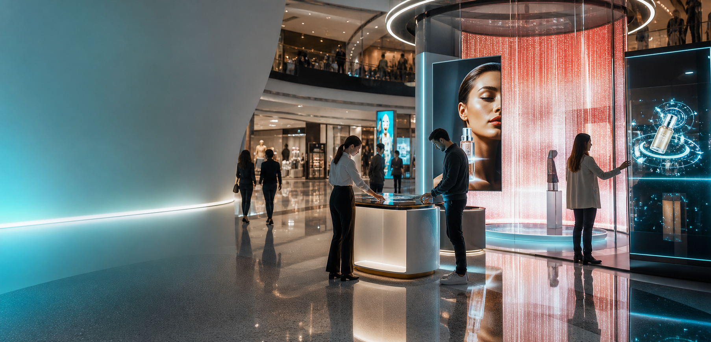
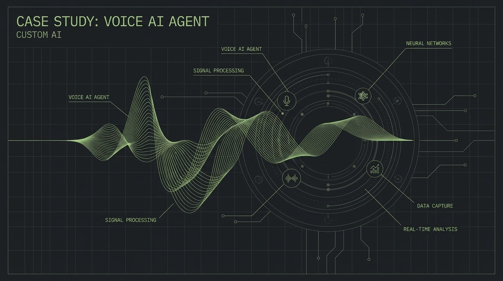

Showroom AI
Captured 2,500+ customer interactions, lifted conversion 28%, and cut manual CRM entry by 80%.

AI experiential tech studio
AI-powered experiences and custom AI for brands and agencies.
Systems that captured customer intent, automated follow-up, improved reporting, and helped teams see what was previously getting lost.
Captured 2,500+ customer interactions, lifted conversion 28%, and cut manual CRM entry by 80%.

Called customers for feedback, lifting positive reviews 40% and accelerating responses to negative incidents.
Improved group diversity 70% and replaced manual reporting with instant outputs.
AI-enabled microphones captured every booth conversation for a next-day lead report.
Analysed inbound calls and turned "irrelevant" leads into growth signals for strategy.
VR, AR, gesture, virtual event, and metaverse builds for agencies and enterprise brands.
Examples of how Omnifetch AI can support discovery, research, market intelligence, content workflows, sales teams, and knowledge operations.
Hyundai Motors
Anupam Sonkar, Head of Dealership Digitization.
Hyundai needed to capture authentic customer-salesperson interactions in showrooms and test drives, generate insights to boost sales conversion, guide HR training, and auto-feed useful data into CRM.
AiCONIC + LeadLens recorded and transcribed interactions, delivered real-time sentiment, objection, purchase likelihood, and performance insights, and enabled personalized recommendations, CRM auto-entry, and HR dashboards.
"The on-ground AI system has completely changed how we understand our customers. We now get unfiltered feedback from test drives, instant insights for our sales team, and clean data in our CRM, all without adding extra workload."
J.K. Tyres Germany
Helmar Kurz, Director Dealership Sales, Est Europe. Hitesh Shastri, Event Partner, J.K Tyres.
At busy dealerships and expos, manual lead capture was inconsistent, causing missed inquiries and reduced ROI. Instant follow-ups with serious customers were also delayed and mismanaged.
AiCONIC AI lead capture used coin-sized microphones on promoters to auto-record and transcribe conversations, extract key lead details in real time, create daily reports, and trigger instant follow-up communication.
"For the first time at a major expo and our dealerships, we didn't miss a single lead. The AI-enabled microphones captured every inquiry seamlessly, giving our team a complete lead report for immediate follow-up."
SkyGarage partnered with LeadLens to enhance customer experience, monitor sales performance, and uncover operational gaps through AI-powered conversation analysis.
As customer inquiries increased across car wash, detailing, repair, and maintenance services, maintaining consistent communication quality became difficult. Management lacked clear visibility into sales team professionalism, product and service knowledge, customer satisfaction signals, missed conversion opportunities, and reasons behind lost leads.
LeadLens deployed an AI-driven conversation intelligence system that automatically analyzes interactions between sales representatives and customers.
With LeadLens, SkyGarage gained a smarter and more scalable way to monitor customer interactions and improve team performance.
"LeadLens enabled SkyGarage to convert everyday customer conversations into measurable business intelligence."
Pizza Hut
Jaysss R., Director of Marketing and Food Innovation, Singapore. Krunal Parikh, Head of Marketing.
Pizza Hut needed to boost positive Google reviews, contain negative incidents before they spread online, and improve low-participation feedback methods that were slow and difficult to act on.
AiCONIC Review Beacon AI made follow-up calls, summarized feedback, sent customers a one-click Google review link, flagged negative feedback instantly, and incentivized responses with discount vouchers.
"Review Beacon made it effortless for our customers to leave positive reviews and helped us defuse negative feedback before it could spiral online. It's been a game changer for our brand reputation."
For thirteen years we have built immersive technology: VR worlds, AR brand activations, gesture-driven installations, virtual events, and metaverse environments. We learned how customers actually behave on a showroom floor, in an expo aisle, and at a brand launch.
When AI matured, we already knew where to point it. Today most of our builds capture conversations, score intent, automate follow-up, and turn live customer interactions into structured intelligence. We still build VR and AR. The difference now is that everything we make can think.
From short consulting sprints to full production builds, we scope the engagement around where you actually are.
AI woven into sales floors, expos, brand activations, and corporate events: conversation intelligence, voice agents, live analytics, and personalised follow-up automation.
Bespoke AI engineering for CRM enrichment, voice agents, internal AI cockpits, multilingual chat, and creative-production pipelines.
The 13-year discipline that started us: VR, AR, mixed reality, virtual and hybrid events, interactive installations, simulations, and brand worlds.
Opportunity audits, governance design, pilot scoping, team training, and in-house versus partner roadmaps.
AI assistants, data capture, recommendation engines, analytics dashboards, and campaign reporting sit behind the experience so brands can act after the moment ends.
We help organizations across industries capture insights, improve engagement, and enhance customer experiences through intelligent, AI-driven solutions tailored to diverse operational needs.
Capture, score, coach, and follow up across dealerships, test drives, and brand-level programs.
Ambient conversation capture, instant lead scoring, live event ROI, and competitor intelligence.
Voice review agents, sentiment analytics, campaign intelligence, and AI creative production flows.
Smart group formation, session intelligence, instant reporting, and speaker or sponsor sentiment tracking.
And adaptable to many other industries and engagement environments.
Most engagements start with a 30-minute discovery call. If there is a fit, we propose a small, time-bound pilot before anyone commits to scale.
A focused conversation to understand what you are trying to do and whether we are a fit. No deck, no pitch.
A 4-8 week engagement that proves the idea works in your environment, with your data and your team.
We design, build, and ship the full system, then stay close while your team learns to run it.
We have worked behind the scenes for 50+ agencies, including DDB Mudra Max, Hakuhodo, Madison, Innocean, ITW, GroupM DCI, Communique, and more.
"The AI microsite and instant reporting transformed how we run our breakout sessions."
Arti S., Coca-Cola
"For the first time we could see why our leads were marked irrelevant and turn that data into growth."
Sandeep S., Skygarage
"At a major expo, we did not miss a single lead. The AI microphones captured every inquiry."
Hitesh S., J.K. Tyres
We respond personally within one business day. No automated queues, no junior account manager.